coord_3d() is the core of every ggcube plot. It controls
how 3D data is rotated, projected, framed, and decorated. This article
walks through each of its parameters in detail.
We’ll use a common base plot throughout:
p <- ggplot() +
geom_function_3d(
aes(fill = after_stat(z), color = after_stat(z)),
fun = function(x, y) sin(x) * cos(y),
xlim = c(-pi, pi), ylim = c(-pi, pi),
n = 50, light = light("direct", contrast = .7)) +
scale_fill_viridis_c() +
scale_color_viridis_c() +
theme_light() +
theme(legend.position = "none",
axis.text = element_blank())Rotation
Three angles control how the plot is oriented: pitch,
roll, and yaw rotate the plot around the x-,
y-, and z-axes, respectively. All are specified in degrees. When they’re
all zero, the plot resembles a standard 2D plot (+x = right, +y = up, +z
= toward viewer). The defaults (pitch = 0,
roll = -60, yaw = -30) give an overhead corner
view that can work well for many plots.
Here are a variety of rotations showing the default, the
zero-rotation case, the effect of setting each rotation angle
individually while the others are held at zero, and an example combining
them to achieve an arbitrary rotation (note this uses the
patchwork library to produce a mutlti-panel plot):
(p + coord_3d() + ggtitle("Default")) +
(p + coord_3d(pitch = 0, roll = 0, yaw = 0) + ggtitle("All angles 0")) +
(p + coord_3d(pitch = 20, roll = 40, yaw = 60) + ggtitle("Arbitrary combination")) +
(p + coord_3d(pitch = 30, roll = 0, yaw = 0) + ggtitle("pitch = 30")) +
(p + coord_3d(pitch = 0, roll = 30, yaw = 0) + ggtitle("roll = 30")) +
(p + coord_3d(pitch = 0, roll = 0, yaw = 30) + ggtitle("yaw = 30")) +
plot_layout(nrow = 2)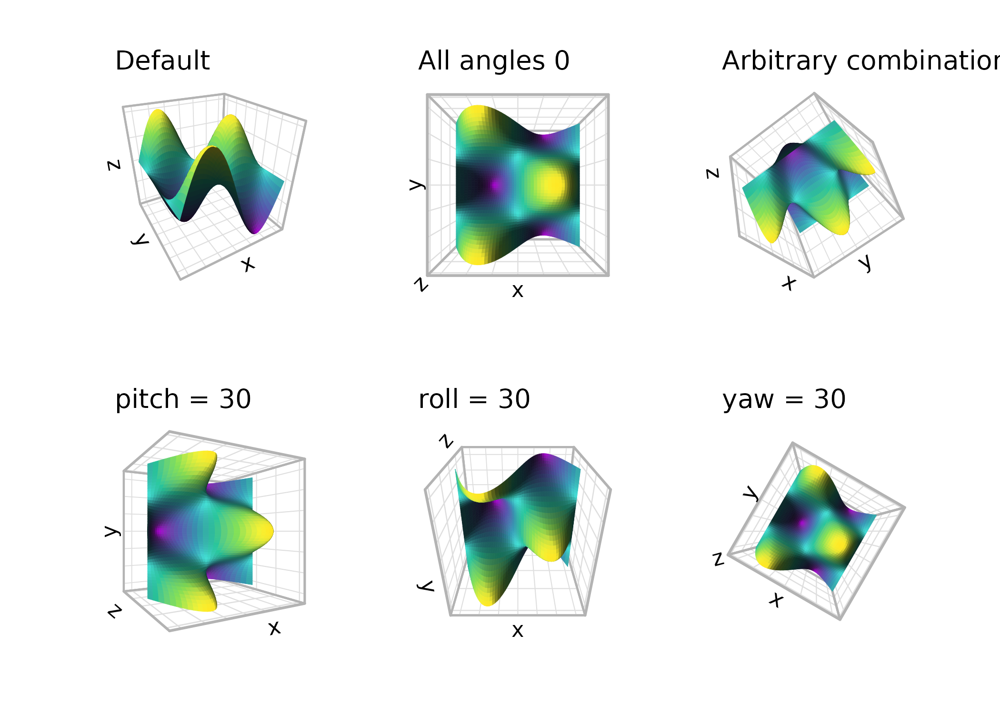
Perspective and distance
By default, coord_3d() uses perspective projection,
where objects farther from the viewer appear smaller. The
dist parameter controls the camera distance from the center
of the data cube — larger values produce less distortion. Set
persp = FALSE to switch to orthographic projection, where
parallel lines in 3D remain parallel in the 2D rendering. Orthographic
projection is equivalent to viewing from infinite distance and can be
useful for technical or schematic plots.
(p + coord_3d(yaw = 45, dist = 1.1) + ggtitle("dist = 1.1")) +
(p + coord_3d(yaw = 45, dist = 2) + ggtitle("dist = 2")) +
(p + coord_3d(yaw = 45, persp = FALSE) + ggtitle("persp = FALSE")) +
plot_layout(ncol = 3)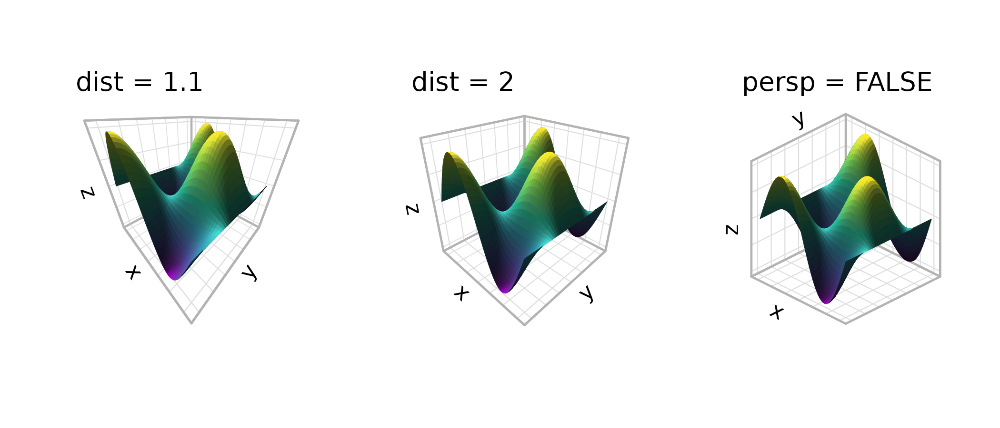
Aspect ratios and scale matching
The scales parameter controls how data ranges map to
visual cube dimensions. With "free" (the default), each
axis is stretched independently to fill its dimension of the cube,
maximizing the visual range for each variable. With
"fixed", the visual proportions match the data proportions,
analogous to coord_fixed() in 2D:
(p + coord_3d(scales = "free") + ggtitle('scales = "free"')) +
(p + coord_3d(scales = "fixed") + ggtitle('scales = "fixed"')) +
plot_layout(ncol = 2) & theme_light()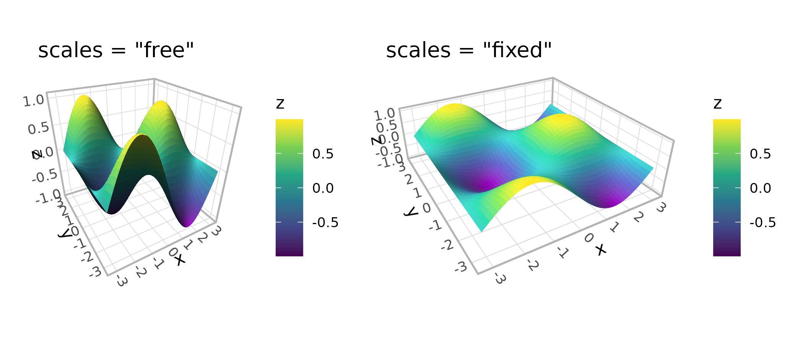
The ratio parameter sets custom relative lengths for the
three axes. With "free" scales, ratios are applied to the
standardized cube coordinates. With "fixed" scales, they’re
applied to the data coordinates:
(p + coord_3d(scales = "free", ratio = c(1, 3, 1)) +
ggtitle('free, ratio = c(1, 3, 1)')) +
(p + coord_3d(scales = "fixed", ratio = c(1, 3, 1)) +
ggtitle('fixed, ratio = c(1, 3, 1)')) +
plot_layout(ncol = 2) & theme_light()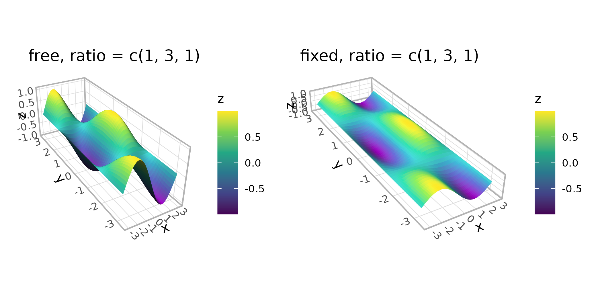
Panel selection
The panels argument controls which faces of the cube are
drawn. The six faces are named "xmin", "xmax",
"ymin", "ymax", "zmin", and
"zmax". Depending on the rotation, some faces lie behind
the data (“background” panels) and some lie in front (“foreground”
panels). By default, only background panels are drawn. When drawn,
foreground panels default to 20% opacity so they don’t obscure the data;
their styling is controlled via theme elements (see the theming section
below).
You can request specific faces by name, show all faces, or hide them entirely:
(p + coord_3d(panels = "background") + ggtitle('"background" (default)')) +
(p + coord_3d(panels = c("xmin", "xmax", "zmax")) +
ggtitle('c("xmin", "xmax", "zmax")')) +
(p + coord_3d(panels = "all") + ggtitle('"all"')) +
(p + coord_3d(panels = "none") + ggtitle('"none"')) +
plot_layout(ncol = 2)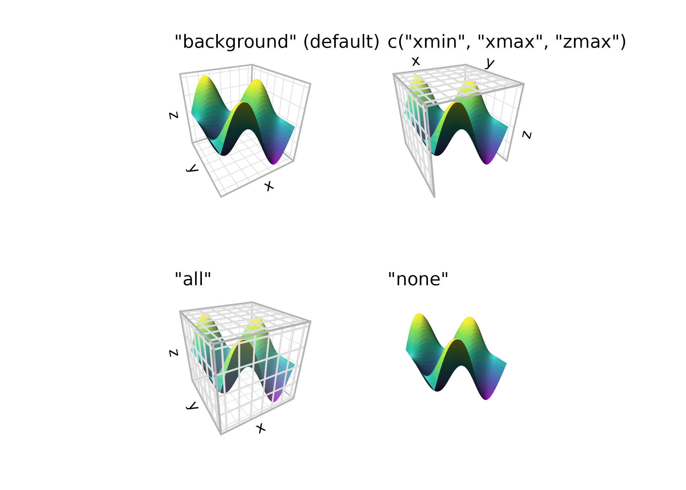
Zooming, clipping, and expansion
zoom adjusts the overall framing without changing the
rotation or projection. Values less than 1 zoom out (more whitespace),
while values greater than 1 zoom in (tighter framing).
The clip parameter controls whether graphical elements
can be drawn outside the panel area (ggplot2’s rectangular canvas, not
the projected 3D panel). The default "off" allows this,
which is generally recommended for 3D plots where elements may extend
beyond the projected panel area.
(p + coord_3d(zoom = 0.7) + ggtitle("zoom = 0.7")) +
(p + coord_3d(zoom = 1) + ggtitle("zoom = 1\n(default)")) +
(p + coord_3d(zoom = 1.5, clip = "on") + ggtitle('zoom = 1.5\nclip = "on"')) +
plot_layout(ncol = 3)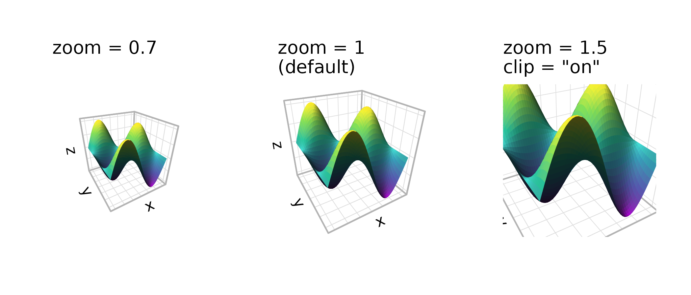
Theexpand parameter works like the expand
argument in standard ggplot2 scales — when TRUE (the
default), axis ranges are padded slightly beyond the data range. You can
fine-tune expansion per axis using the standard scale functions.
(p + coord_3d(expand = TRUE) + ggtitle("expand = TRUE (default)")) +
(p + coord_3d(expand = FALSE) + ggtitle("expand = FALSE")) +
plot_layout(ncol = 2)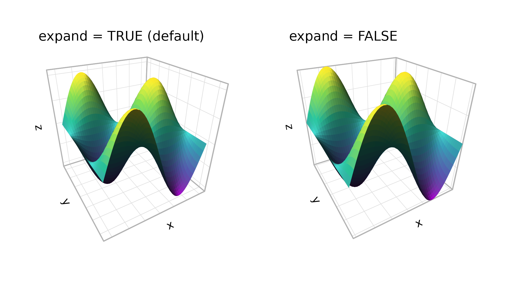
Axis label placement
The xlabels, ylabels, and
zlabels parameters control where axis tick labels and
titles are placed. Each axis potentially has multiple possible edges
where labels could appear (depending on which faces are visible). The
default "auto" uses a heuristic that prioritizes edges on
the periphery of the plot for readability.
For manual control, pass a length-2 character vector naming two adjacent faces — the shared edge between them is where the labels go. The first face determines the alignment plane:
(p + coord_3d() + ggtitle("auto (default)")) +
(p + coord_3d(xlabels = c("ymax", "zmax"),
zlabels = c("xmax", "ymin")) +
ggtitle("manual placement")) +
plot_layout(ncol = 2) & theme_light()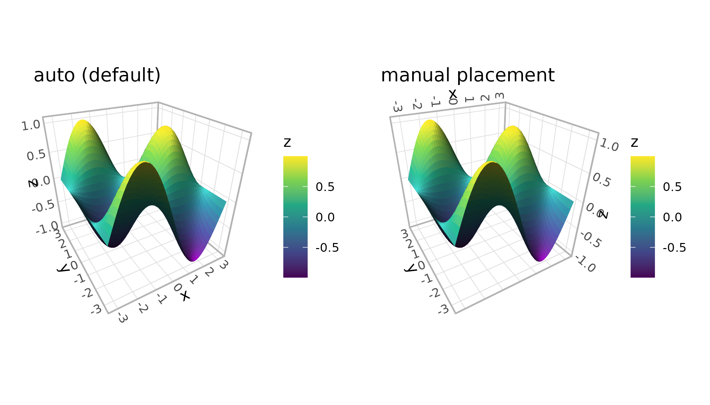
The rotate_labels parameter controls whether labels
automatically rotate to align with the projected axis direction. Setting
it to FALSE uses the angle specified in theme settings
instead:
(p + coord_3d(rotate_labels = TRUE) + ggtitle("rotate_labels = TRUE")) +
(p + coord_3d(rotate_labels = FALSE) + ggtitle("rotate_labels = FALSE")) +
plot_layout(ncol = 2) & theme_light()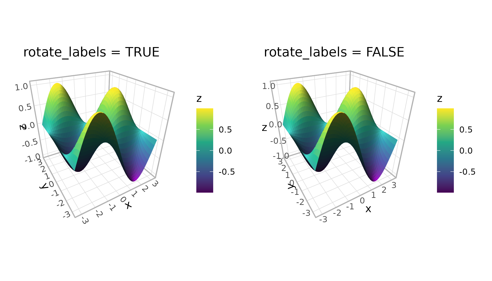
The title_position parameter affects axis titles that
fall on internal (non-peripheral) edges. "auto" places them
at the near end of the axis outside the plot area, while
"center" centers them along the edge.
Theming the 3D cube
Standard ggplot2 themes work with ggcube. Adding a complete theme behaves as expected:
(p + coord_3d() + theme_dark() + ggtitle("theme_dark()")) +
(p + coord_3d() + theme_minimal() + ggtitle("theme_minimal()")) +
plot_layout(ncol = 2)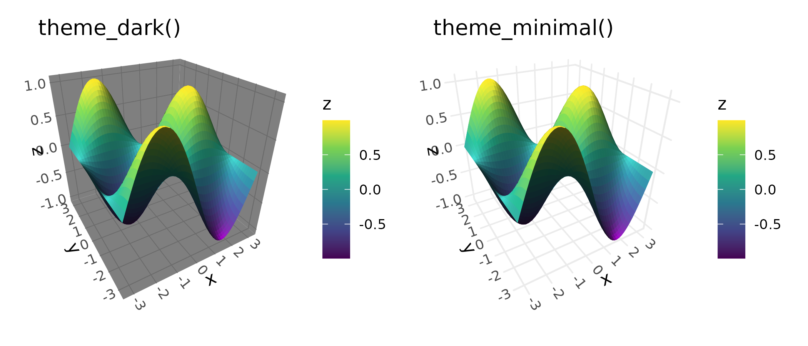
ggcube also adds several theme elements for 3D-specific styling. One
important category is foreground panel elements, which control cube
faces rendered in front of the data. These inherit from their background
counterparts, so styling panel.background affects both
background and foreground faces, while panel.foreground
targets only the front faces. ggcube’s element_rect()
extends ggplot2’s version with an alpha parameter for
transparency. This is particularly useful for foreground panels — the
default panel.foreground uses alpha = 0.2 so
front faces don’t obscure the data:
p +
coord_3d(panels = "all") +
theme_gray() +
theme(panel.border = element_rect(color = "black"),
panel.foreground = element_rect(alpha = .3),
panel.grid.foreground = element_line(color = "gray", linewidth = .25))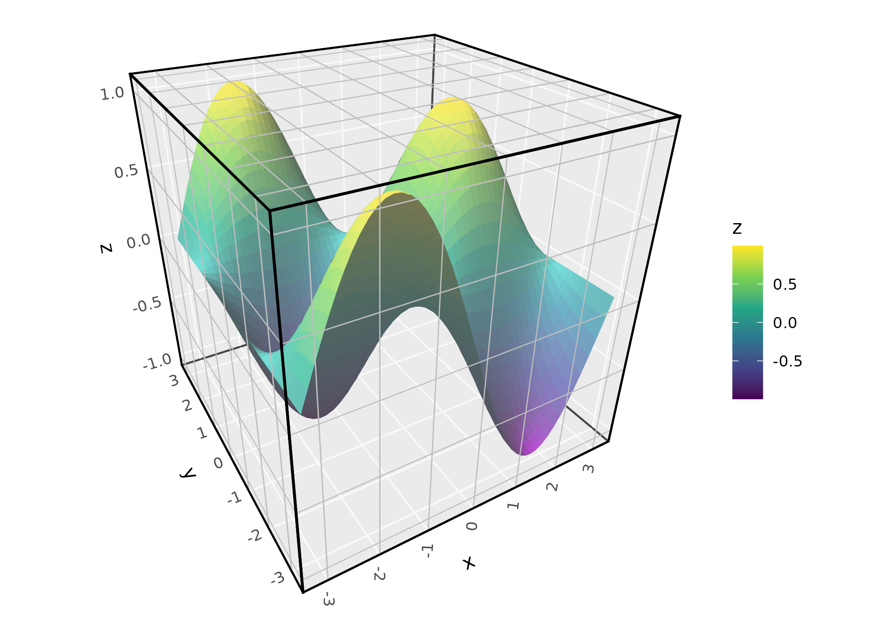
For axis labels, ggcube adds axis.text.z and
axis.title.z elements that inherit from
axis.text and axis.title respectively.
The margin argument to element_text()
controls padding between titles, labels, and cube edges. Because
ggcube’s current system for text spacing is fairly crude, margins need
to be manually adjusted more often than in base ggplot2 figures.
p +
coord_3d(panels = "all") +
theme(panel.background = element_rect(color = "black"),
panel.border = element_rect(color = "black"),
panel.foreground = element_rect(alpha = .3),
panel.grid.foreground = element_line(color = "gray", linewidth = .25),
axis.text = element_text(color = "darkblue", size = 12),
axis.text.z = element_text(color = "darkred"),
axis.title = element_text(margin = margin(t = 30)),
axis.title.x = element_text(color = "magenta"))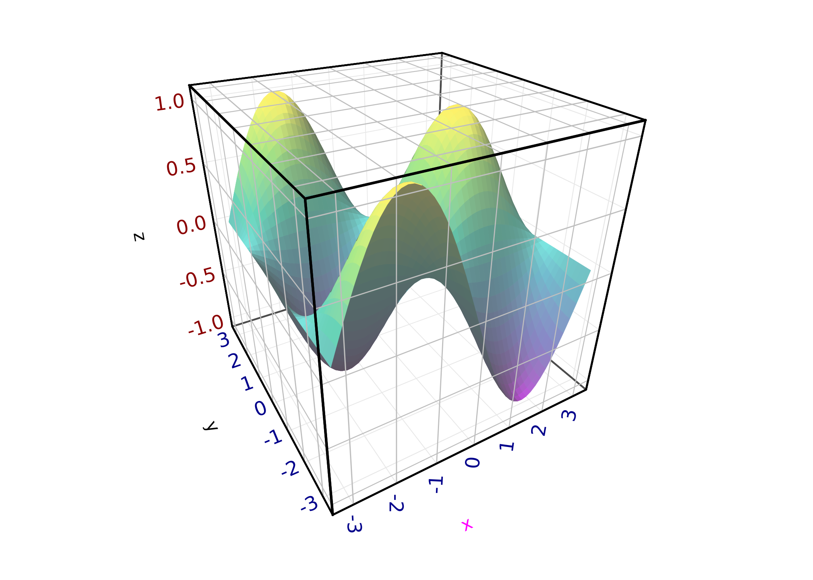
The full set of 3D-specific theme elements:
-
panel.foreground: Fill and border for foreground cube faces (inherits frompanel.background) -
panel.border.foreground: Border for foreground faces (inherits frompanel.border) -
panel.grid.foreground: Grid lines on foreground faces (inherits frompanel.grid) -
panel.grid.major.foreground: Major grid lines on foreground faces (inherits frompanel.grid.foreground) -
axis.text.z: Z-axis tick labels (inherits fromaxis.text) -
axis.title.z: Z-axis title (inherits fromaxis.title)